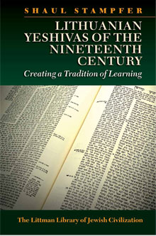

Lithuanian Yeshivas of the Nineteenth Century
Creating a Tradition of Learning
Translated from Hebrew by Lindsey Taylor-Guthartz
This is the first systematic study of the Lithuanian yeshivas that flourished from 1802 to 1914 in their social and cultural context; their legacy still dominates orthodox Jewish society. The main focus is the yeshiva of Volozhin, which in its independence of the local community was the model for everything that followed, but chapters are also devoted to the yeshivas of Slobodka and Telz, and to the kollel system.
More info
One of the key ways in which the traditional Jewish world of eastern Europe responded to the challenges of modernity in the nineteenth century was to change the system for educating young men so as to reinforce time-honoured, conservative values. The yeshivas established at that time in Lithuania became models for an educational system that has persisted to this day, transmitting the talmudic underpinnings of the traditional Jewish way of life. To understand how that system works, one needs to go back to the institutions they are patterned on: why they were established, how they were organized, and how they operated.
This is the first properly documented, systematic study of the Lithuanian yeshiva as it existed from 1802-1914. It is based on the judicious use of contemporary sources—documents, articles in the press, and memoirs—with a view to presenting the yeshiva in its social and cultural context. Three key institutions are considered. Pride of place in the first part of the book is given to the yeshiva of Volozhin, which was founded in 1802 according to an entirely new concept—total independence from the local community—and was in that sense the model for everything that followed. Chapters in the second part focus on the yeshiva of Slobodka, famed for introducing the study of musar (ethics); the yeshiva of Telz, with its structural and organizational innovations; and the kollel system, introduced so that married men could continue their yeshiva education. Topics covered include the leadership and changes in leadership; management and administration; the yeshiva as a place of study; daily life, and so forth.
This edition is based on the second Hebrew edition, which was revised so as to include information that became available with the opening up of archives in eastern Europe after the fall of communism.
About the author
Shaul Stampfer is Rabbi Edward Sandrow Professor of Soviet and East European Jewry and chairman of the Department of Jewish History at the Hebrew University of Jerusalem. He has also taught at Harvard University and elsewhere, including Moscow (1989–91), where he helped establish the Jewish University. Through his many published articles he has made a seminal contribution to the Jewish social history of eastern Europe, opening up new areas of research in the history of Jewish education, Jewish demography and family life, community organization and leadership, and related topics. He is the author of Families, Rabbis, and Education: Traditional Jewish Society in Eastern Europe, also published by the Littman Library.
Contents
Introduction
Part I The Volozhin Yeshiva
1 The Beginnings of the Volozhin Yeshiva
R. Hayim of Volozhin - The Foundation of the Volozhin Yeshiva - The Establishment of the Yeshiva in Volozhin - Setting Up the Yeshiva and Organizing Financial Support - Curriculum and Students - Areas of Study - The Position of the Rosh Yeshiva - Yeshivas Modelled on Volozhin
2 The Beginning of the Yeshiva - Succession, Conflicts, and Change
R. Yitshak of Volozhin as Rosh Yeshiva - Change and Continuity at the Yeshiva - The Role of the Yeshiva in Society - R. Eliezer Fried as successor to R. Yitshak - R. Naftali Berlin and the Question of Authority at the Yeshiva - The Conflict with R. Yehoshua Heschel Levin - The Conflict with R. Yosef Dov Soloveitchik - The Restoration of Order to the Staff and the Yeshiva
3 The Yeshiva as a Place of Study
The Yeshiva as a Torah Study Centre - The Framework of Study - The Yeshiva Staff and their Functions - The Yeshiva's Functions
4 The Yeshiva Administration
Supervision of Studies and Examinations - The Shiur and Student Participation - The Importance of the New Mode of Study - Staff–Student Relations: Financial Support and Discipline - The Status of the Yeshiva in the Jewish World
5 Students at the Volozhin Yeshiva
The Decision to Study at the Yeshiva - Admission to the Yeshiva - Absorption at the Yeshiva - Integration at the Yeshiva - Student Activity and the Yeshiva's Response - The Individual Student and the Yeshiva - Students and the Local Community
6 Life at the Volozhin Yeshiva
Daily Routine - Study Arrangements - The Yeshiva Year - Sabbaths and Festivals - Extra-Curricular Activity - The Haskalah: Interest among Students - The Haskalah: The Yeshiva's Response - Leisure Activities
7 The Final Years of the Volozhin Yeshiva
Charity and Aid Associations - Zionist Organizations - Other Associations - Student Newspapers - Political Activity at the Yeshiva - The Financial State of the Yeshiva in its Final Years
8 The Closure of the Volozhin Yeshiva
Relations between the Yeshiva and the Authorities - Secular Studies at the Yeshiva - Background to the Controversy over the Successor to R. Berlin - The Struggle over the Succession - The Factors in the Closure of the Yeshiva - Appendix to Chapter 8: Official Documents about the Volozhin Yeshiva
Part II Slobodka, Telz, and the Kolel
9 The Slobodka Yeshiva
The Musar Movement - R. Yisrael Salanter - The Slobodka Yeshiva - The Yeshiva's Students - Talmud Study at the 'Musar Yeshiva' - Internal Problems and External Expansion - Controversy and Conflict at the Yeshiva
10 The Telz Yeshiva
The Foundation of the Yeshiva - R. Eliezer Gordon - The Aims of the Yeshiva - Study at the Yeshiva - Admission of Students - Basic Support for the Yeshiva Students - Conflicts at the Yeshiva - Factors in the Disruptions at the Yeshiva - R. Eliezer Gordon's Attitude towards the Haskalah and Zionism - R. Gordon's Confrontation with the Social Crisis
11 The Kolel Haperushim of Kovno and the 'Kolel' Institution
The Foundation of the Kolel and its Early History - The Kolel's Mode of Operation - Opposition and Conflicts - The Kolel of Brodsky
Conclusion
Bibliography
Index
Reviews
'Stampfer sifts through mountains of documentation, searching for versions that ring true and painting an extraordinarily detailed account of every aspect of life in the famous yeshivot. His book is vital to the students of Orthodox Jewish history and of Jewish culture in eastern Europe.'
Pinchas Roth, Association of Jewish Libraries Reviews
'One of the foremost experts on eastern European Jewry . . . He has a well-deserved reputation for being one of the nicest people in Israeli academia; but he seems to revel in challenging common assumptions, tweaking conventional wisdom, and making eastern European Jewry look very different from what everyone seems to think. He does all of these things in [this book], an expanded translation of his masterful 1995 Hebrew book on the subject. Its publication should change the way English-speaking Jews think about what a yeshiva is and ought to be.'
Yoel Finkelman, Jewish Ideas Daily
‘[The English version] is a book incorporating the latest research by Stampfer, which would be most useful and effective when read along with the author's collection Families, Rabbis, and Education . . . Together, these two studies provide an in-depth analysis of the role of educational institutions for the traditional community undergoing a process of modernization their actual and projected impact on members of the community, and their socio-cultural environment . . . undoubtedly an important tool for the researcher of the Jewish history and culture of Eastern Europe, and its appearance in the English language significantly broadens its audience.’
Lara Lempertienė, Lithuanian Historical Studies
‘A serious work of exhaustive scholarship.’
Matthew Schwartz, Menorah Review

416 pages
ISBN: 978-1-874774-79-2
Hardback out of print
978-1-906764-60-9 paperback
£19.95 / $29.95 paperback
Published 8 March 2012
31 July 2014 paperback
Other books by this author:

Families, Rabbis and Education
Traditional Jewish Society in Nineteenth-Century Eastern Europe